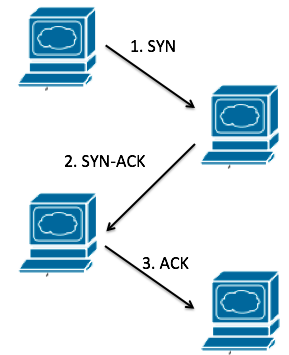
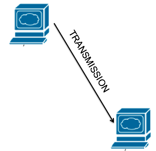

Overview 概述 <<
Previous Next >> TCP IP Stack
TCP and UDP
TCP is a connection-oriented protocol that ensures the reliable transport of data segments from one device to another. During transmission, if a segment is dropped, it will be detected and resent or retransmitted by the originator device. Each communication is acknowledged upon receipt, providing a secure model to ensure successful communications. This type of transmission is great for all network data types, especially those that need delivery to be assured.
When a TCP communication is initiated, the originator and receiver perform a “three-way handshake” before starting the data transmission. In the first step, the originator sends a packet with a synchronization (SYN) flag set. Next, the receiver acknowledges receipt of this SYN flagged packet by sending back a synchronization-acknowledged (SYN-ACK) flagged packet. Finally, the originator sends an acknowledgement of the synchronization-acknowledged flagged packet, and then data transmission occurs.
TCP是一種面向連接的協議，可確保將數據段從一台設備可靠地傳輸到另一台設備。在傳輸過程中，如果某個段丟失，則發起方設備將檢測到該段並將其重新發送或重新發送。每次通信在收到後都會得到確認，從而提供一個安全的模型來確保成功進行通信。這種傳輸方式適用於所有網絡數據類型，尤其是那些需要確保傳輸的網絡數據類型。
啟動TCP通信時，發起方和接收方在開始數據傳輸之前執行“三向握手”。第一步，發起方發送一個設置了同步（SYN）標誌的數據包。接下來，接收器通過發回同步確認（SYN-ACK）標記的數據包來確認此SYN標記的數據包的接收。最後，始發者發送對已同步確認的標記數據包的確認，然後發生數據傳輸。
EXAMPLE
Think of this like two students who want to discuss an important project that is upcoming. The first student, Bob, says to Jane, “Jane, I want to talk to you.” Next, Jane says, “Bob, I acknowledge that you want to talk to me and I am ready to listen.” Finally, Bob tells her, “Jane, I understand you are ready to listen. Let’s talk.” At this point, the two students can talk, knowing they are both ready to listen to each other.
就像兩個想討論即將開展的重要項目的學生一樣。第一位學生鮑勃對簡說：“簡，我想和你說話。” 接下來，簡說：“鮑勃，我承認你想和我說話，我已經準備好傾聽。” 最後，鮑勃告訴她：“簡，我知道你已經準備好聽了。讓我們談談。” 此時，兩個學生可以交談，知道他們倆都準備好了互相傾聽。

Diagram of TCP three-way handshake. Image used under CC-BY license from National STEM Consortium.
UDP, or user datagram protocol, was developed as a connectionless protocol in order to increase the speed of the network over TCP transmissions. Because of the three-way handshake in TCP, as well as all the delivery assurance and quality control, TCP has a good amount of network overhead that slows down its communications. Network engineers realized that sometimes you don’t need delivery assurance or quality control. So UDP was established.
UDP is considered unreliable, because if a segment is dropped during transmission, the sending device doesn’t know and doesn’t care. There is no retransmission. Once data is sent, it is gone. This is good, though, for audio and video streaming. In these applications, the data transferred is enormously large, and if a single segment is dropped it doesn’t affect the overall quality of the audio or video sent.
UDP（或用戶數據報協議）被開發為無連接協議，目的是通過TCP傳輸提高網絡速度。由於TCP中的三向握手以及所有的傳送保證和質量控制，TCP具有大量的網絡開銷，從而降低了其通信速度。網絡工程師意識到有時您不需要交付保證或質量控制。這樣就建立了UDP。
UDP被認為是不可靠的，因為如果在傳輸過程中丟棄了一個網段，則發送設備將不知道也不在乎。沒有重傳。數據一旦發送，就消失了。但是，這對於音頻和視頻流來說是很好的。在這些應用程序中，傳輸的數據非常大，如果丟棄單個段，則不會影響所發送的音頻或視頻的整體質量。
EXAMPLE
I like to think of UDP as my college calculus teacher. He started at one side of the board at 8 a.m., and by 9 a.m. he was done at the other side of the board. He never asked if the students understood what he said or wrote, he just kept transmitting. This is a great example of UDP.
我喜歡將UDP視為我的大學微積分老師。他在上午8點從董事會的一側開始，到上午9點，他在董事會的另一側完成了工作。他從不問學生是否理解他所說或寫的內容，他只是不斷地傳播。這是UDP的一個很好的例子。

Diagram of UDP transmission. Image used under CC-BY license from National STEM Consortium.
TCP Vs. UDP TCPVs。UDP協議
TCP and UDP have many differences. TCP is reliable, but UDP is unreliable. TCP focuses on connection-oriented communications using the three-way handshake, while UDP is connectionless. TCP uses windowing, discussed in more detail later, to control the amount of data sent at a given time based on changing network speeds, but UDP simply transmits everything once with no windowing. TCP also supports segment sequencing; UDP just hopes it gets to the destination in the right order. Finally, TCP waits for acknowledgements, but UDP just hopes it got there. To simplify it, TCP is an assured and reliable communication method, UDP is just a best-effort model.
TCP和UDP有很多區別。TCP是可靠的，但UDP是不可靠的。TCP專注於使用三向握手的面向連接的通信，而UDP是無連接的。TCP使用開窗（稍後將更詳細地討論）來基於不斷變化的網絡速度來控制在給定時間發送的數據量，但是UDP僅傳輸所有信息一次而沒有開窗。TCP還支持段排序；UDP只是希望它以正確的順序到達目的地。最後，TCP等待確認，但是UDP只是希望它到達目的地。為簡化起見，TCP是一種有保證且可靠的通信方法，UDP只是一種盡力而為的模型。
Overview 概述 <<
Previous Next >> TCP IP Stack